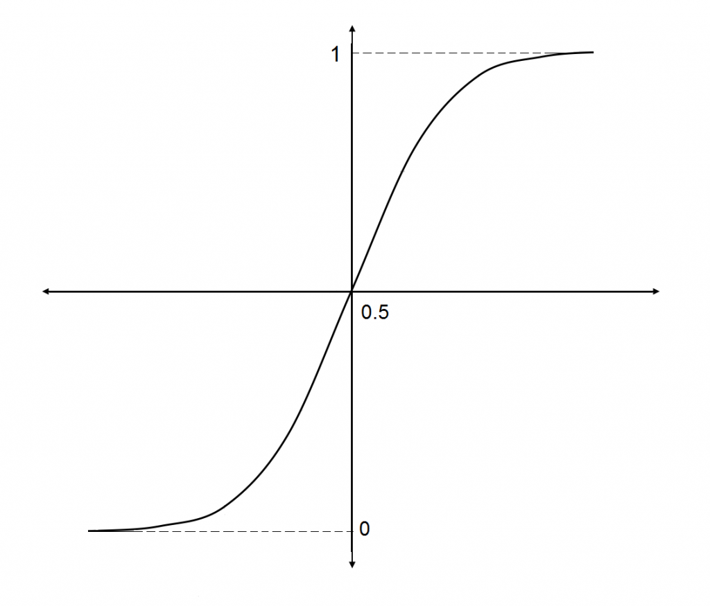
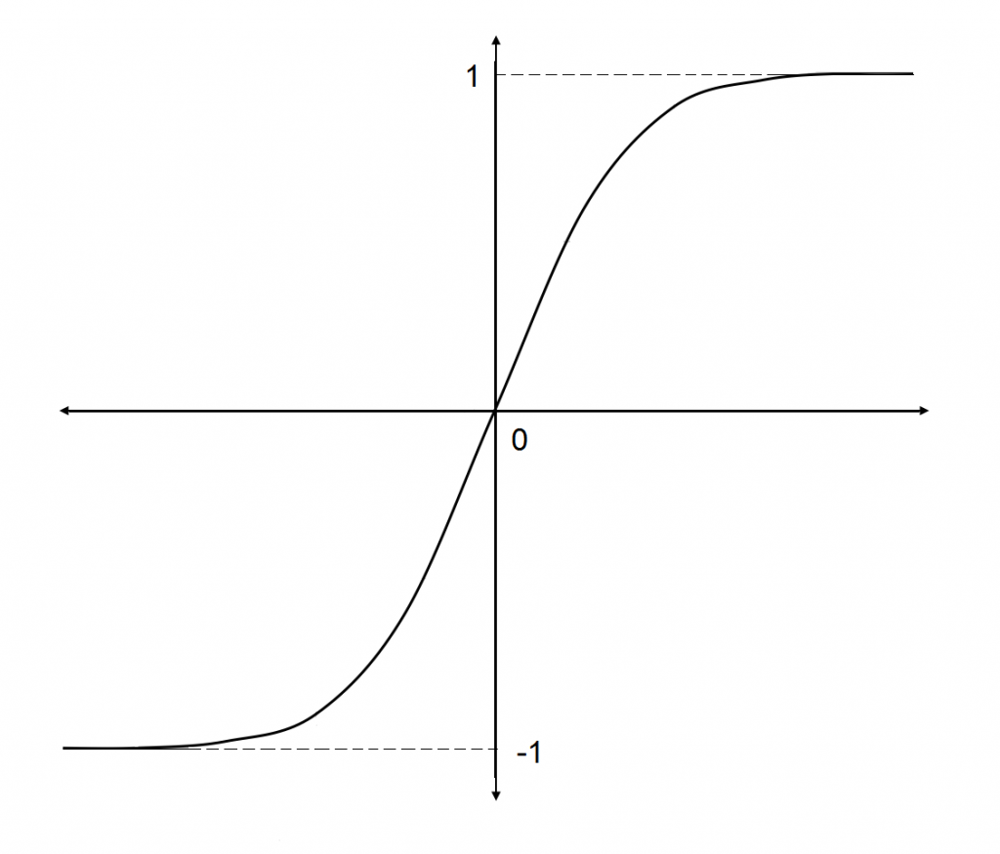
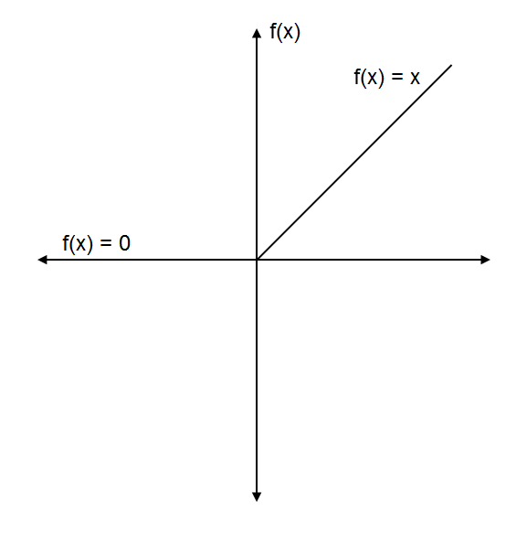
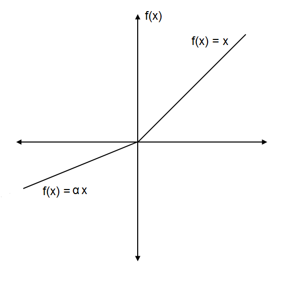
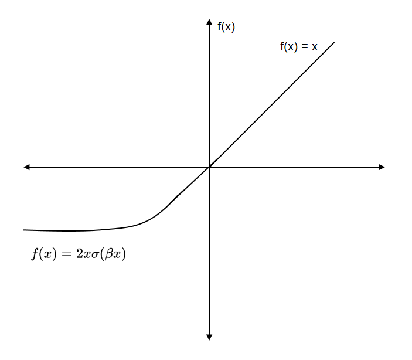
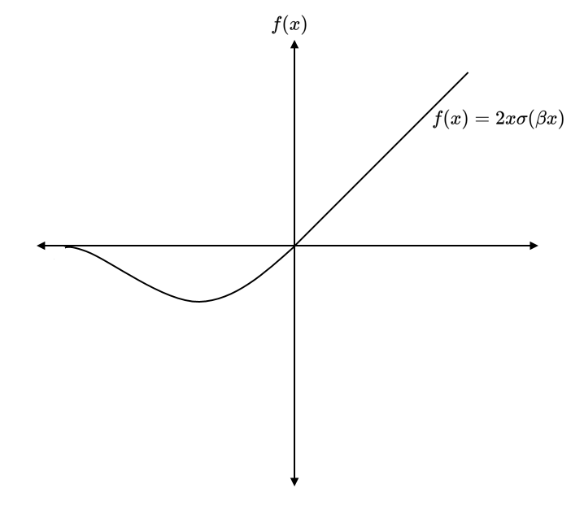
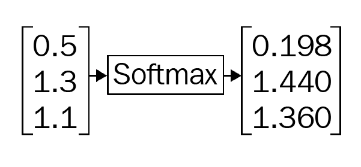

Autoencoders IV: Funciones de activación#
An activation function, also known as a transfer function, plays a vital role in neural networks. It is used to introduce non-linearity in neural networks. As we learned before, we apply the activation function to the input, which is multiplied by weights and added to the bias, that is, \(f(z)\) , where z = (input * weights) + bias and \(f(\cdot)\) is the activation function. If we do not apply the activation function, then a neuron simply resembles the linear regression. The aim of the activation function is to introduce a non-linear transformation to learn the complex underlying patterns in the data.
Now let’s look at some of the interesting commonly used activation functions.
The sigmoid function#
The sigmoid function is one of the most commonly used activation functions. It scales the value between 0 and 1. The sigmoid function can be defined as follows:
It is an S-shaped curve as shown below:

It is differentiable, meaning that we can find the slope of the curve at any two points. It is monotonic, which implies it is either entirely non-increasing or non-decreasing. The sigmoid function is also known as a logistic function. As we know that probability lies between 0 and 1 and since the sigmoid function squashes the value between 0 and 1, it is used for predicting the probability of output. The sigmoid function can be defined in python as follows:
import numpy as np
def sigmoid(x):
return 1/ (1+np.exp(-x))
The tanh function#
A hyperbolic tangent (tanh) function outputs the value between -1 to +1 and is expressed as follows:
It also resembles the S-shaped curve. Unlike a sigmoid function which is centered on 0.5, the tanh function is 0 centered, as shown in the following diagram:

Similar to the sigmoid function, it is also a differentiable and monotonic function. The tanh function is implemented as follows:
def tanh(x):
numerator = 1-np.exp(-2*x)
denominator = 1+np.exp(-2*x)
return numerator/denominator
The Rectified Linear Unit function#
The Rectified Linear Unit (ReLU) function is another one of the most commonly used activation functions. It outputs a value from o to infinity. It is basically a piecewise function and can be expressed as follows:
That is, \(f(x)\) returns zero when the value of x is less than zero and \(f(x)\) returns x when the value of x is greater than or equal to zero. It can also be expressed as follows:
The ReLU function is shown in the following figure:

As we can see in the preceding diagram, when we feed any negative input to the ReLU function, it converts it to zero. The snag for being zero for all negative values is a problem called dying ReLU, and a neuron is said to be dead if it always outputs zero. A ReLU function can be implemented as follows:
def ReLU(x):
if x<0:
return 0
else:
return x
The leaky ReLU function#
Leaky ReLU is a variant of the ReLU function that solves the dying ReLU problem. Instead of converting every negative input to zero, it has a small slope for a negative value as shown:

Leaky ReLU can be expressed as follows:
def leakyReLU(x,alpha=0.01):
if x<0:
return (alpha*x)
else:
return x
The value \(\alpha\) of is typically set to 0.01. The leaky ReLU function is implemented as follows: Instead of setting some default values to \(\alpha\), we can send them as a parameter to a neural network and make the network learn the optimal value of \(\alpha\). Such an activation function can be termed as a Parametric ReLU function. We can also set the value of \(\alpha\) to some random value and it is called as Randomized ReLU function.
The Exponential linear unit function#
Exponential linear unit (ELU), like Leaky ReLU, has a small slope for negative values. But instead of having a straight line, it has a log curve, as shown in the following diagram:

It can be expressed as follows:
The ELU function is implemented in python as follows:
def ELU(x,alpha=0.01):
if x<0:
return (alpha*(np.exp(x)-1))
else:
return x
The Swish function#
The Swish function is a recently introduced activation function by Google. Unlike other activation functions, which are monotonic, Swish is a non-monotonic function, which means it is neither always non-increasing nor non-decreasing. It provides better performance than ReLU. It is simple and can be expressed as follows:
Here, \(\sigma(x)\) is the sigmoid function. The Swish function is shown in the following diagram:

We can also reparametrize the Swish function and express it as follows:
When the value of \(\beta\) is 0, then we get the identity function \(f(x) = x\). It becomes a linear function and, when the value of \(\beta\) tends to infinity, then \(f(x)\) becomes \( 2max (0, x)\), which is basically the ReLU function multiplied by some constant value. So, the value of \(\beta\) acts as a good interpolation between a linear and a nonlinear function. The swish function can be implemented as shown below:
def swish(x,beta):
return 2*x*sigmoid(beta*x)
The softmax function#
The softmax function is basically the generalization of the sigmoid function. It is usually applied to the final layer of the network and while performing multi-class classification tasks. It gives the probabilities of each class for being output and thus, the sum of softmax values will always equal 1.
It can be represented as follows: $\(f\left(x_{i}\right)=\frac{e^{x_{i}}}{\sum_{j} e^{x_{j}}}\)$
As shown in the following diagram, the softmax function converts their inputs to probabilities:

The softmax function can be implemented in python as follows:
def softmax(x):
return np.exp(x) / np.exp(x).sum(axis=0)